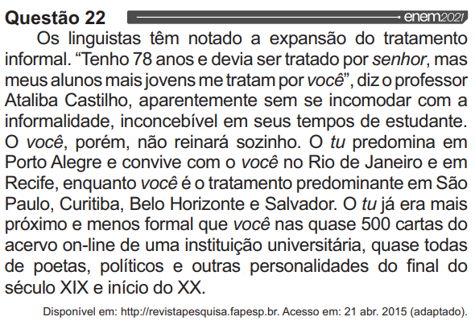

ENEM
PÁGINA INICIAL
SIMULADO
SOBRE
CRÉDITOS
01
02
03
04
05
06
07
08
09
10
11
12
13
14
15
16
17
18
19
20
21
22
23
24
25
26
27
28
29
30
31
32
33
34
35
36
37
38
39
40
41
42
43
44
45

Fonte: https://download.inep.gov.br/enem/provas_e_gabaritos/2021_PV_impresso_D1_CD1.pdf | Questão 22